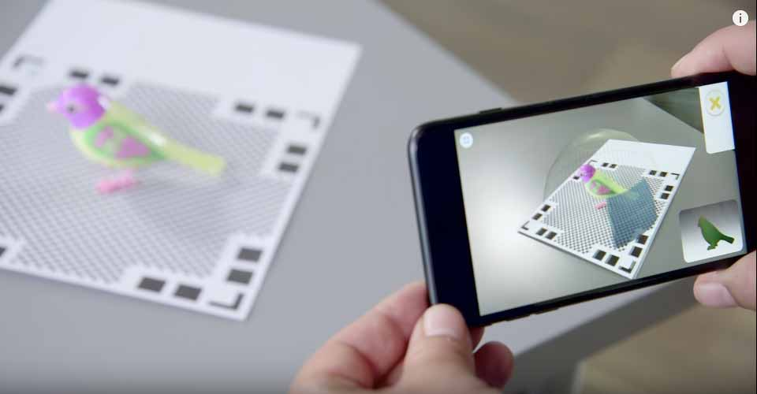
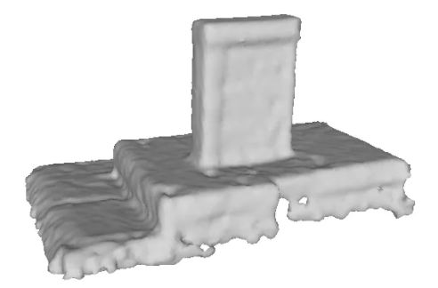

3D Mesh Reconstruction from Smartphone Videos
Final Project Proposal

Project Information
-
Title: 3D Mesh Reconstruction from Smartphone Videos
-
Summary: Given multiple images or a video from a smartphone, we will reconstruct a 3D object mesh. This will involve real-time scanning around the object and post-processing.
-
Team Members: Ryan Leung, Ivy Nguyen, Pransu Dash
Project Description
-
Problem: With regards to 3D modeling, it can be a painstaking process to create digital representations of real-life objects, like buildings for architectural models and real-life objects for 3D printing or video games.
-
Our Proposed Solution: Using videos to scan a physical object can be a more efficient method of 3D modeling. This is currently a heavily researched area and the current solutions are computationally heavy and not very good at reproducing all features. We want to work on creating a more accurate 3D mesh of real-life objects and if we have time, realistic texture mapping. We hope to accomplish this with open source libraries. We will look for potential improvements, such as rendering simple shapes more accurately and smoothly.
Goals and Deliverables
-
What we plan to deliver (base goal):
-
We plan to deliver 3D renderings in an interactive environment (similar to those of projects 2, 3, and 4) based on sample 360-degree mp4 files we take on our smartphones.
-
What we hope to deliver (stretch goal):
-
We hope to package the code as an easy to use smart-phone app.
-
How to measure the quality / performance of our system:
-
We checked sites like this for how to quantify accuracy of 3D models, but there isn't a well-defined procedure, so we will subjectively determine visual similarity to reality.
-
Compare rendering times for simple and complex scenes/geometries
-
If possible, low GPU usage and fast rendering times
-
Define the kind of images you will create:
|

Mesh Reproduction
|
Texture Mapped
|
-
If you are working on an interactive system, describe what demo you will create:
-
We will take a 360 degree video of an object and then use that as input in the command line. After running the executable, the program will post-process the video and render a 3D mesh object.
-
If there is extra time, we can show the object being used in a scene rendered by Unity.
-
Schedule
-
Week 1 (4/9-4/16):
- Standardize input video file - define specifications for the video.
- Does the object need to be on a white background?
- How many fps/keyframes?
- Depth map estimation
-
-
-